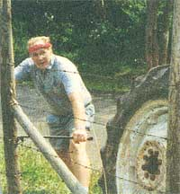
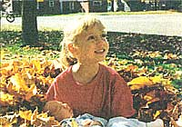
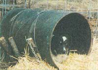
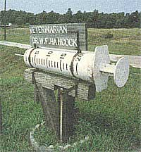

Instead of buying those ridiculously expensive vitamin C cough drops, try a dose of better and cheaper C by making rose hips drops in the freezer. There are many ways of preserving the goodness of rose hips, but after years of trial and waste I find the ice cube method the easiest and least wasteful.
When I first became aware of the nutritional value of rose hips, I started making jelly. This was fine but there always seemed to be a dab or two that spoiled in the jelly jar and had to be discarded. Next I graduated to making plain puree and tried adding it to foods such as soups and sauces. Sometimes it altered the flavor of the basic dish just enough to draw complaints from more discriminating members of the family. Then, too, often a small portion of the jar contents was overlooked and discarded. I was raised on the axiom "waste not, want not," and this excess bothered me.
Then inspiration struck-why not a frozen concentrate of rose hip extract?
To make the extract, I've "trialed and errored" the following method.
Gather hips when ripe, i.e., red. (We grow Rosa rugosa shrubs which produce small blossoms but large hips the size of small crab apples.)
Chill the hips to inactivate enzyme action that might destroy the vitamin content.
Remove stems and blossom ends. Wash. For each cup of hips use one-half cup boiling water. Cover pan and simmer for 15 minutes. Remove from heat and mush with fork or masher; let stand in a pottery utensil for 24 hours. Strain off extract, add two tablespoons lemon juice for each pint. Pour into plastic ice cube trays and freeze. As soon as they solidify, I remove them from spacetaking trays and put the cubes of nutrition into plastic bags. I add any amount of cubes to fruit drinks, soups, gelatin desserts, and sherbets.
-Joan Lindema
Hornell, NY
If you have tons of leaves and live near an empty field, you might try my method of disposal: get permission to add some nutrients to your neighbor's field. It's quick and utilizes just your lawn tractor and plastic bags.
We mounted a discarded utility company wire reel. Then we added a few inexpensive hardware-store items. Now we have a great hose storage area.
My neighbor offered me a solid-oak storage shed. We put a couple logs under it, dragged it to our property, and added some great free rock, three more windows, and a door. Now we have a guest house that sleeps two.
-Roger Reeb
Racine, OH
An inexpensive and easy-to-make doghouse can be created very quickly by using an old 50-gallon barrel. The barrel, with one end cut out of it, makes a good shelter where Fido can get out of the wind and rain. With a little straw for bedding, the barrel makes a comfortable home.
To keep the barrel stable and secure, stakes can be driven into the ground on either side of it to keep it from rolling about. The barrel can also be wired to the stakes, with the wires going over the top of the barrel and fastened to the stakes on either side to ensure that it does not move about or become dislodged by a rambunctious dog. The stakes can also serve as a solid anchor for a chain, if the dog is to be tied.
-Heather Thomas
Salmon, ID
Here are two down-to-earth parenting tips. Keep a bar of soap on the changing table and stick the diaper pins in it. The soap will make the pins slip through diapers as smooth as silk. You'll save on diaper pins and there's less chance of poking your little bundle of joy.
Also, here is a recipe for homemade clay that I like better than the old flourand-salt standby. Mix together 1 cup corn starch, 1 1/2 cups baking soda, and 1 1/4 cups cold water. Stir constantly over medium heat until very thick (about five minutes). Cool and store in sealed container. This clay is soft and smooth. It can air dry or you can bake it in a 250° oven until hard. It works great for making beads or whatever other creations your budding artist sculpts.
- Julie Bowe
Mondavi, WI
How about a mailbox that looks like a big ...ouch? This huge hypo needle alongside the road is actually a clever mailbox. The plunger part of it is hinged and swings to the side so the mail can be inserted. It belongs to Dr. W. F. Hancock, a veterinarian about four miles south of Wahoo, Nebraska, on U.S. Highway 77. A sign on the building says it is the Wahoo Animal Hospital. Most people involuntarily squirm a little when they see this, and if animals comprehend such things I don't suppose it does them much good either. No matter how you slice it, this Paul Bunyan-scale innoculator will keep the neighbors guessing for some time.
- ElwinTrump
Wymore, NE
|
 |
 |
 |
|
 |
|
|